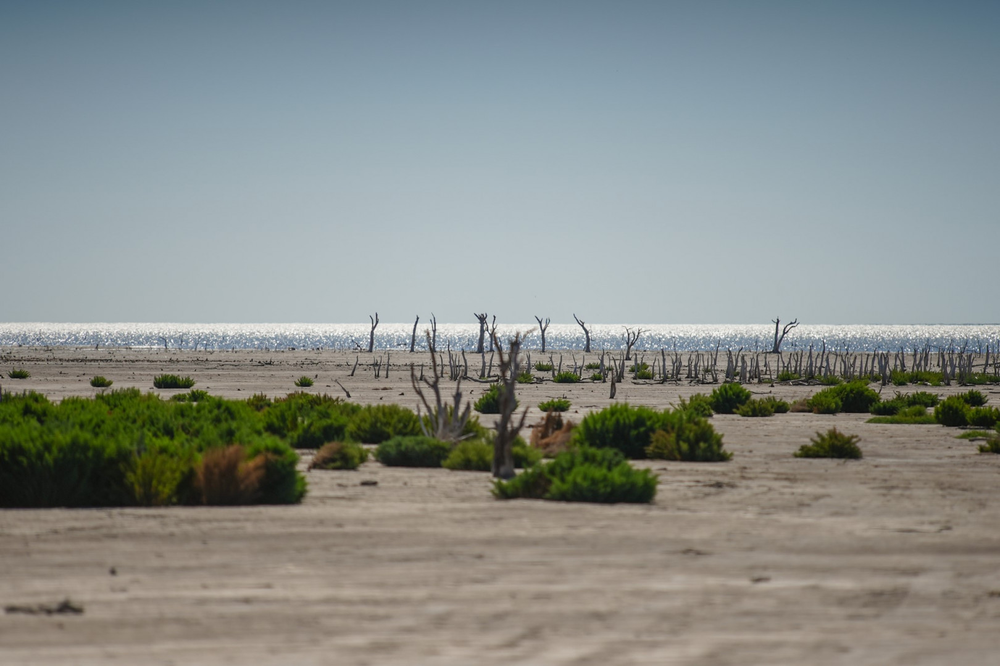
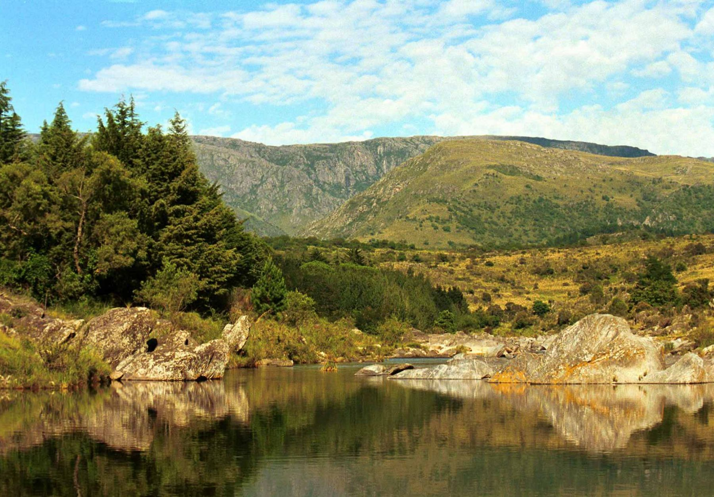
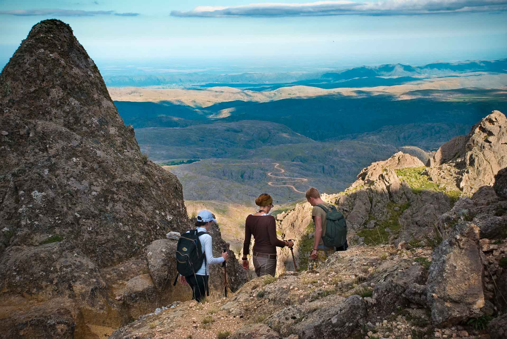
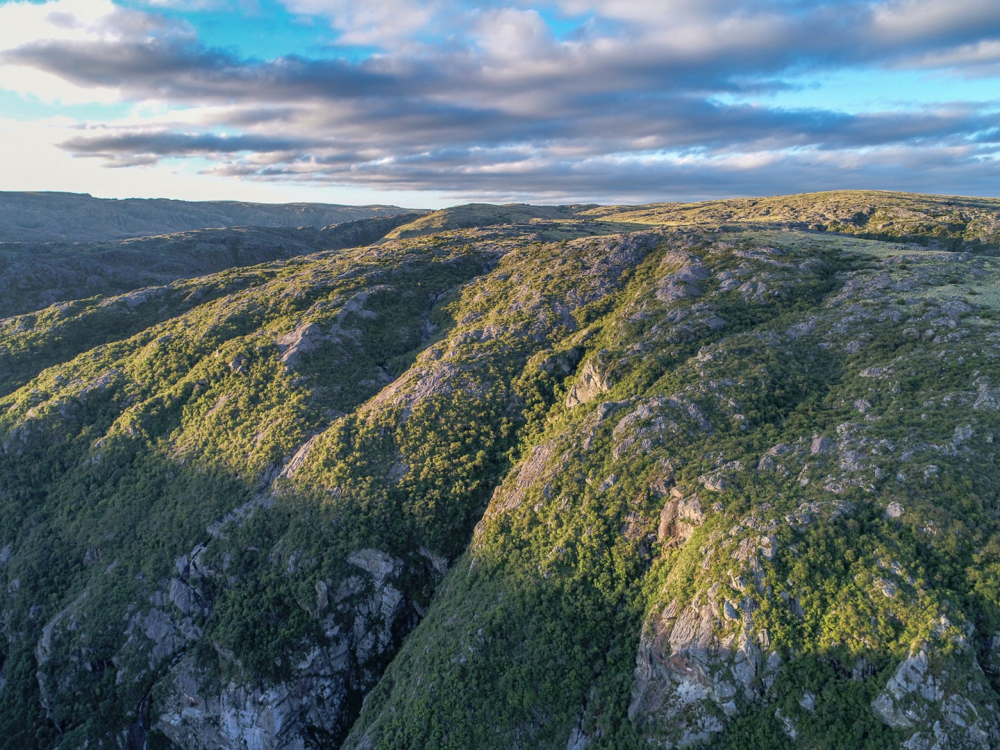
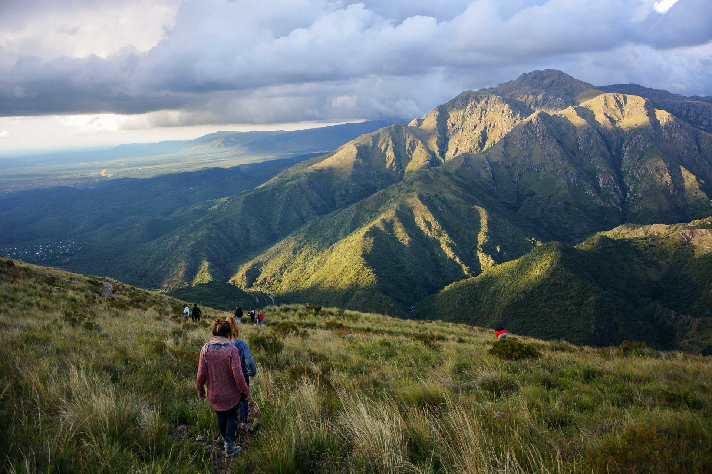

Instante Austral
Inicio
Norte
Centro
Sur
Mapa
Contacto
Centro Argentino
Corazón fértil de Argentina
Buenos Aires
Lugares de Buenos Aires
Ciudad Autónoma de Buenos Aires
Lugares de CABA
Córdoba
Miramar de Ansenuza

Valle de Calamuchita

Los Gigantes

Parque Nacional Quebrada del Condorito

Cerro Uritorco

Entre Ríos
Lugares de Entre Rios
La Pampa
Lugares de La Pampa
Mendoza
Lugares de Mendoza
San Juan
Lugares de San Juan
San Luis
Lugares de San Luis
Santa Fé
Lugares de Santa Fe